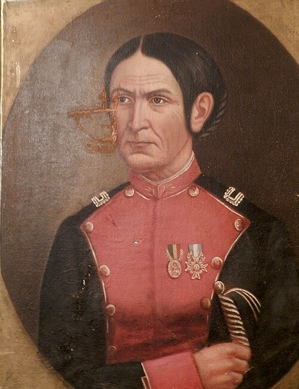

¿Quien fue Juana Azurduy?
Juana Azurduy Bermudeznacio el 12 de Julio de 1780 en Toroca,actual Bolivia.Fue hija de un hacendado blanco y una mujer indigena chuquissaqueña.Quedo huerfana de pequeña y se crio en un convento, pero a los 17 años se escapo para vivir libremente.
En 1805 se caso conManuel Asencio Padilla, con quien compartio su amor por la independencia.Juntos se unieron a la Revolucion de chuquisaca de 1809,uno de los primeros gritos libertarios de Amercica del sur.
Cuando estallo la Revolucion de mayo 1810, el matrimonio padilla puso su hacienda,sus bienes y su vida al servicio de la causa patriota.Juana no solo acompaño a su esposo: comando personalmente tropas de indigenas y mestizos,demostrando una valentia extraordinaria.

Retrato de Juanza Azurduy, heroina de la independencia
Guerrera Valiente
Participo en mas de 30 combates.En la Batalla de a laguna en 1816,despues de que mataran a su esposo Manuel Padilla, ella tomo el mando, rescato su cuerpo y siguio luchando.fue herida varias veces pero nunca se rindio.
Reconocida por Belgrano
El General Manuel Belgrano quedo admirado por su valor y en 1816 le regalo su propia espada y le otorgo el grado de Teniente Coronel del ejercito Argentino.fue la unica mujer en obtener ese rango en esa epoca.
Madre y Luchadora
Tuvo 5 hijos y lucho estando embarazada.Cuatro de sus hijos murieron durante la guerra por la duras condiciones.A pesar de perder a su familia y sus bienes,siguio defendiendo la libertad hasta el final de sus dias en la pobreza.
¿Por que es importante hoy?
Juana Azurduy es simbolo de la mujer fuerte,valiente e independiente.Murio pobre y olvidadael 25 de Mayo de 1862 en jujuy, a los 81 años.Tuvieron que pasar mas de 100 años para que la Argentina la reconociera.En 2009,la presidenta Cristina Fernandez la ascendiopostunamente a Generala del ejercit Argentino y hoy su imagen esta en el salon de las mujeres de casa rosada y en billletes de 10.000 pesos
Su historia nos enseña que la independencia tambien fue hecha por mujeres y por pueblos originarios
Ver su vida completa y cronologia